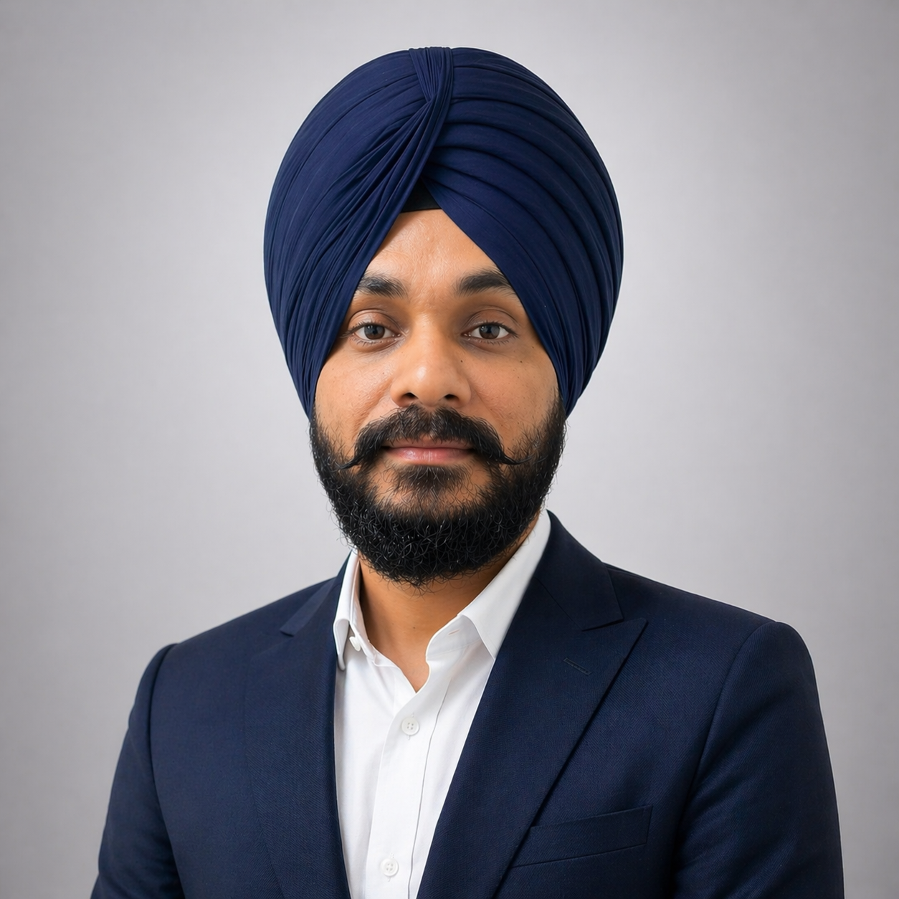

Amrit Singh Bedi
Assistant Professor, Department of Computer Science, University of Central Florida
Adjunct Assistant Professor, Department of Computer Science, University of Maryland (2026–2029)
I am an Assistant Professor in the Department of Computer Science at the University of Central Florida, where I lead the SafeRR AI Lab. The modern generative AI development cycle has three stages: pre-training, post-training, and deployment. Our lab focuses on the latter two, targeting cutting-edge problems across LLMs, VLMs, vision-language-action models, diffusion LLMs, and agentic AI.
At the post-training stage, we develop novel fine-tuning and reinforcement learning methods that align AI systems with human values and safety constraints. At the deployment stage, we design inference-time algorithms that make models safer, more robust, and more reliable — without retraining. Our key research themes include:
- — AI Alignment — RLHF, preference learning, and reward modeling
- — Safety & Trustworthiness — inference-time safeguards, jailbreak defenses, and robustness in generative AI
- — Reinforcement Learning — multi-agent RL, hierarchical RL, and embodied intelligence
- — Optimization & Theory — bilevel, non-convex, and federated methods for modern ML
Prior to UCF, I held positions at the University of Maryland, College Park, and the U.S. Army Research Laboratory. I received my Ph.D. in Electrical Engineering from IIT Kanpur.
Selected News
Two papers accepted to ICLR 2026
Two papers from our group accepted to ICLR 2026 in Rio de Janeiro, Brazil.
Paper accepted to EACL 2026
LIAR: Leveraging Inference Time Alignment (Best-of-N) to Jailbreak LLMs in Seconds
Paper on safety of VLMs accepted to AAAI 2026
Paper accepted to Nature Biotechnology
Our work on generative AI and biosecurity.
Three papers accepted to NeurIPS 2025
Work on reasoning models, theoretical RL, and LLM alignment.
Organizing the first NeurIPS Workshop on Biosecurity Safeguards for Generative AI
San Diego, California, USA.
Area Chair — ACL 2025, NeurIPS 2025, TMLR
Invited talk at Asilomar 2025 on satisficing alignment
Paper accepted to CVPR 2025
Immune: Improving Safety Against Jailbreaks in Multi-modal LLMs via Inference-Time Alignment
Five papers accepted to ICML 2024, two to NeurIPS 2024
Including an ICML Spotlight (top 3.5%). Invited talks at IBM Research, Google DeepMind NYC, Amazon, and UT Austin.
Selected Publications
Learning Multi-Robot Coordination through Locality-Based Factorized Multi-Agent Actor-Critic Algorithm
Does Thinking More Always Help? Mirage of Test-Time Scaling in Reasoning Models
Bounded Rationality for LLMs: Satisficing Alignment at Inference-Time
Immune: Improving Safety Against Jailbreaks in Multi-modal LLMs via Inference-Time Alignment
Transfer Q*: Principled Decoding for LLM Alignment
MaxMin-RLHF: Towards Equitable Alignment of Large Language Models with Diverse Human Preferences
Closing the Gap: Achieving Global Convergence (Last Iterate) of Actor-Critic under Markovian Sampling with Neural Network Parametrization
PARL: A Unified Framework for Policy Alignment in Reinforcement Learning
Teaching
Courses taught at the University of Central Florida across graduate and undergraduate levels. View teaching page →